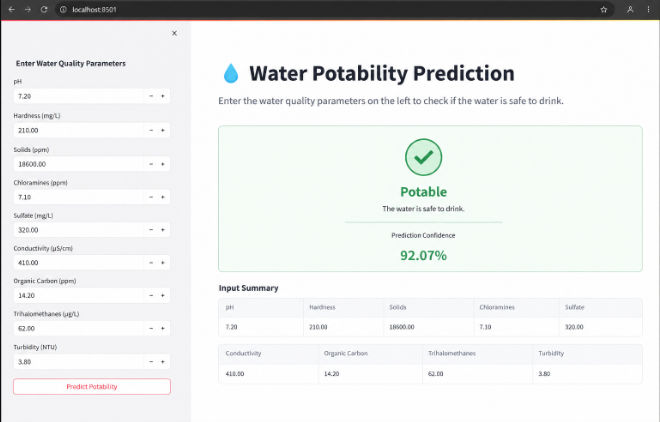
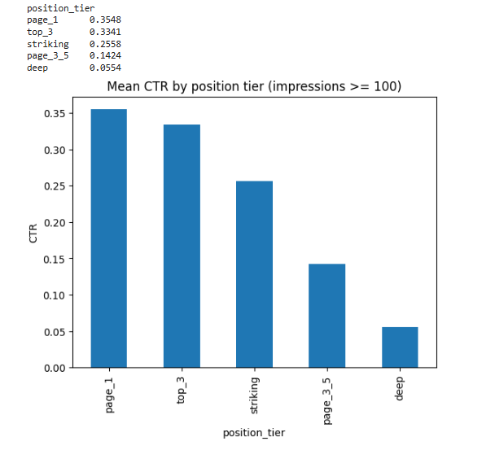

Work
Water Potability Screening Pipeline
The problem
Testing whether water is safe to drink usually depends on manual lab analysis — slow, and not something you can run constantly. A faster, automated way to screen water chemistry data and flag likely-unsafe samples means problems get caught sooner.
What I did
I built a full pipeline: ANN and CNN models, DVC for data versioning, MLflow for experiment tracking, Airflow for orchestration, all containerized with Docker and deployed on AWS App Runner behind a FastAPI backend with a Streamlit interface. The model's recall came out much higher than its precision — 76% vs. 37%. That wasn't engineered deliberately going in, but it's the right tradeoff here: missing unsafe water is worse than a false alarm.

What came of it
A working, deployed screening pipeline, not just a trained model in a notebook. Accuracy: 67%, recall: 76%, precision: 37%. The numbers aren't perfect and I won't pretend otherwise — precision has real room to improve. But the pipeline runs end-to-end, from raw data through a live API and interface.
View the repoContent Refresh Priority Model (FlyRank Internship)
The problem
Content teams often decide what to fix by guessing — refresh whatever's oldest, or whatever a manager happens to notice. When that guess is wrong, effort gets spent on a page that didn't need it, while a page actually losing real traffic keeps bleeding, unnoticed.
What I did
I built two ways of ranking which pages to fix first, so I'd have something honest to compare: a simple rule (flag old, still-visible pages) and a model trained to find patterns across several signals at once. I chose to test the model because the simple rule's failure mode is exactly the guessing problem above — it treats "old" as the whole story, when it isn't.

What came of it
The simple rule picked the right page to fix first about 1 in 4 times. The model got it right roughly 3 out of 4 times — a 3x improvement in precision, tested honestly by holding entire clients out of training. This project is still in progress — the numbers above are from the starter dataset, not a finished capstone result yet.
View the repo